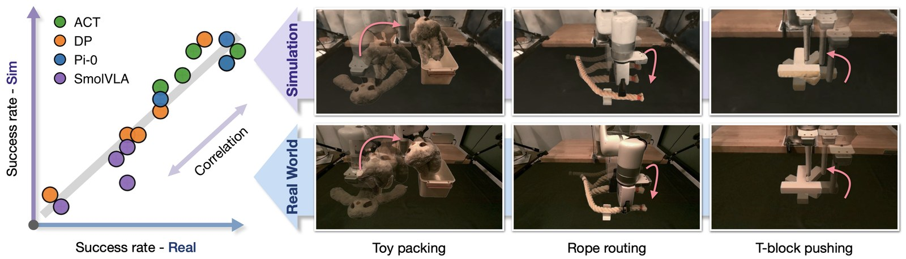
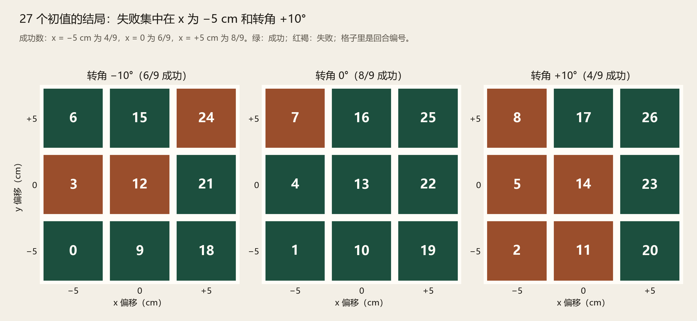
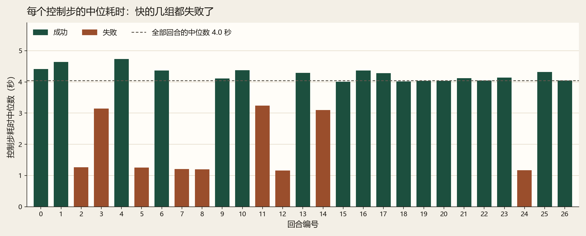

Real2Sim-Eval · 2026.11.26
【一卡一世界】仿真想替真机打分，绳子得软，颜色得像那台相机 | ICRA 2026 Real2Sim-Eval论文复现笔记




给机器人策略打分，最诚实的办法是让它在真机上一遍遍地做。可真机评测又慢又难复现：每一回合都要有人把绳子摆回原位，摆得准不准全凭手感；同一个检查点今天成功、明天失败，你分不清是策略不稳，还是绳子换了个弯。训练越来越快，评测成了最慢的那一环。
仿真本来可以接这份活，却很少有人敢拿它来评测，因为仿真里表现好的策略，到了真机上未必好。Columbia、SceniX 和 Google DeepMind 的 Kaifeng Zhang、Shuo Sha、Hanxiao Jiang、Matthew Loper、Hyunjong Song、Guangyan Cai、Zhuo Xu、Xiaochen Hu、Changxi Zheng 和 Yunzhu Li 想回答的是：什么样的仿真器，才能把策略的好坏排得和真机一样。论文发在 ICRA 2026，代码、数据和检查点都公开了。
评测要的是排序
这篇论文要的不是一个好看的仿真器，而是一个统计意义上的承诺。同一批策略和检查点，在仿真里和真机上各跑一遍同一组初值，得到两组成功率，再看两者的皮尔逊相关系数，以及沿用 SIMPLER 的 MMRV（排名会错位多少）。策略只用真机示范训练，一条仿真数据都不掺。仿真器只需要回答一件事：哪个检查点更好。
作者认为仿真和真实之间隔着两道缝：外观和动力学。策略看的是相机画面，画面不像，判断就跟着偏；物体动得不像，同一个动作的后果也就不一样。三个任务专挑动力学难的：把毛绒玩具装进盒子，把一根绳子穿过夹子的两个开口，把 T 形块推到目标位置。前两个是软体，传统仿真调几个全局参数根本对不上。
外观：一部 iPhone，和一个二次多项式
外观用 3D 高斯泼溅（3DGS）。拿 iPhone 上的 Scaniverse 绕工作台扫一圈，得到机器人、桌子和背景的高斯模型；每个物体再单独扫一次，然后在 SuperSplat 里把它们切开。一个任务只扫这一次。
扫出来的高斯还得对齐到机器人的坐标系。物体对齐到 PhysTwin 的粒子；机器人从 URDF 的每个连杆采 2000 个表面点，用 ICP 加 RANSAC 求变换，背景和机器人是一起扫的，直接沿用同一个变换。每个高斯核再按最近邻继承一个连杆编号，机械臂一动，它就跟着那节连杆走，夹爪也能张合。
接下来是一个容易被忽略的细节：颜色。高斯继承的是 iPhone 的颜色，策略训练时看的却是 RealSense 的画面，而 RealSense 本来就偏色。绿幕合成（SIMPLER 的做法）在第三人称相机上还能糊弄过去，碰上装在手腕上的相机就露馅了。作者在固定相机的位姿上，把高斯渲染图和真实相机拍的图配成对，在 RGB 空间里拟合一个二次多项式，用迭代重加权最小二乘压住离群像素。附录写得很具体：5 张 848×480 的图，Tukey 双权重，迭代 50 次。消融里去掉这一步，绳子任务的相关系数从 0.901 掉到 0.714。仿真要像的不是真实世界，而是那台相机眼里的真实世界。
动力学：一根绳子，两千个质点
软体动力学交给 PhysTwin。它把物体表示成质点和弹簧：距离在阈值内的质点之间连一根弹簧，每根弹簧有自己的刚度。这些参数从一段人手摆弄物体的视频里优化出来：跟踪手的关键点，当作控制点接进弹簧系统，调参数让仿真里的物体运动对上视频。这次跑的绳子是 2002 个质点、17048 根弹簧。
抓取的写法很讲究。很多仿真为了稳，会把物体的点直接焊在夹爪上；这里接触只靠摩擦，夹爪的碰撞力超过阈值就停止闭合，抓不抓得住由摩擦说了算。高斯跟着粒子走：刚体按刚体变换更新，软体用线性混合蒙皮（LBS）。物理求解跑在 NVIDIA Warp 上，作者报告单卡 5 到 30 FPS，快慢取决于有没有接触。
去掉逐弹簧的刚度、只用一个全局刚度，绳子任务的相关系数从 0.901 降到 0.832。拿 IsaacLab 把绳子近似成一串铰接链条做对照，只有 0.237。
考场规则
评测协议照 Kress-Gazit 等人的建议来：每个任务固定一组初值，仿真和真机用同一组。真机那边有个实时叠加工具，把仿真里的初始状态画在相机画面上，操作员照着把物体摆过去。绳子任务的初值是一个 3×3×3 的网格：x、y 各偏移 −5 到 5 厘米，转角 −10 到 10 度，一共 27 组，每组 30 秒。
真机的成败由人判，仿真里用特权状态自动判。绳子算成功，要求夹子的两个开口各有超过 100 根弹簧段穿过，并且在最后 100 帧（3.3 秒）里维持超过 30 帧。三个任务上，完整方法的相关系数分别是 0.944（装箱）、0.901（绳子）和 0.915（推 T）。
论文对局限也说得算坦白。逐检查点的成功率只画在图里，正文没有列表。回放实验把同一段真机动作原样放进仿真，绳子的 405 条里仍有 52 条结果和真机不一致。作者还点名，绳子任务上 ACT 的绝对成功率仿真和真机对不齐，只是趋势一致。所以它证明的是排序可信，不是每一条轨迹都对。
在 W7900 上，Warp 先过不了关
这次用的是一张 AMD Radeon Pro W7900D（gfx1100，48 GB），镜像是 ROCm 7.14 加 PyTorch 2.11，容器里只挂这张卡的渲染节点。跑的是 README 里的示例：绳子任务，ACT 检查点 007000，也就是训练 7000 步的最后一个检查点；27 组初值，每组 30 秒，最后用仓库自带的 calculate_success_rope.py 打分。
第一个拦路的是 Warp。Warp 1.7 用 NVRTC 现场编译内核，没有 gfx1100 这个目标。我把弹簧质点求解器用 PyTorch 重写了一遍，保留 phystwin.py 调用的那几个入口。弹簧力用 index_add_ 累加；自碰撞的邻居搜索不用哈希网格，直接 cdist 再取 top-k；和夹爪、夹子网格的碰撞最费心：先在 2 厘米内找三角形上的最近点（Ericson 的那套最近点算法），再用广义缠绕数判断点在网格内外，阈值照原来的 0.6。Warp 自己用 BVH 近似这个缠绕数，这里的网格只有几千个三角形，我直接精确求和。
高斯光栅化器是标准的 CUDA 扩展，改动反倒都很机械：CUB 换成 hipCUB，GLM_FORCE_CUDA 换成 GLM_FORCE_HIP，cooperative_groups.h 指向 HIP 的同名实现，__trap() 换成 __builtin_trap()。最好笑的一处是 hipcc 不接受内核启动语法里多出来的空格，<< < 得写成 <<<。
Sapien 是另一类麻烦。项目只用它解析 URDF、算正逆运动学，画面全由高斯负责，可 Sapien 3 一建场景就去开 Vulkan，而容器里有渲染节点、没有 Vulkan 驱动，进程直接中止。补丁让场景只建 PhysX 的 CPU 系统，加载 URDF 时丢掉可视网格；顺手补回 Sapien 2 的 Pose.from_transformation_matrix，再绕开 transforms3d 0.4.2 在 NumPy 2 上因为 copy=False 报的错。gradio 只在可视化时用，改成用到时再导入。最后，进程退出时 Sapien 和 Open3D 的析构会报 free(): invalid pointer，而那时视频早已写完，评测脚本就在末尾直接 os._exit(0)，免得一个析构错误把正常结束盖成崩溃。
10 号回合，停在第 291 步
回合从 0 开始编号，0 到 9 号顺利跑完。10 号回合跑到第 291 步，日志就再也没动过。进程还活着，CPU 占满一个核，GPU 利用率是 0，就这样过了 25 个小时。
用 gdb 看主线程，它卡在一个再普通不过的操作里：tensor[mask] 这样的布尔下标。PyTorch 要先 nonzero 数出有几个元素，再把这个数从显存拷回主机；hipMemcpyWithStream 底下是 HSA 的 BusyWaitSignal::WaitRelaxed，一直在空等一个完成信号。信号没回来，等待也没有超时。这次没有追到信号为什么没回来，只做了两件事：给评测脚本加一个起始回合的参数，从 10 号回合接着跑；再套一个看门狗，日志 180 秒不前进就杀掉重试一次，还不行就跳过这一组。看门狗后来又出手三次，每次它等的那一组都已经有一段完整的录像，重试一次也没用上。
这个看门狗脚本有个疏忽：它告诉评测从哪一组开始，却没告诉它在哪一组停。于是每个进程都一路跑到 26 号，下一个进程再从下一组从头来过。17 组补跑，跑了五天。
慢在哪里
27 组跑完以后回头看日志，一个控制步快的不到 1 秒，慢的 10 秒，多数回合的中位数在 4 秒上下，一组 30 秒的仿真要跑将近一个小时。论文说单卡 5 到 30 FPS，这里大约 0.25 FPS，差了一到两个数量级。
有几组明显快：2、5、7、8、12、24 号回合，中位数约 1.2 秒一步，这几组全都失败了；3、11、14 号约 3.2 秒，也都失败了；18 个成功的回合，没有一个快过 4 秒一步。最可能的解释是接触：夹爪和夹子碰不到绳子，网格碰撞那段查询就很少真正干活；论文自己也说，速度随接触状态变化。
慢的主要原因在我这版求解器，而不在显卡。绳子每个控制步要走 667 个子步。上游的 Warp 版把这 667 个子步录成一张 CUDA Graph，每步回放一次；我这版 PyTorch 求解器没有录图，只能在 Python 里一个子步一个子步地发内核，中间还夹着好几次把布尔结果拷回主机的同步，有这些同步在，想录也录不进图里。下一步是先去掉这些同步、把子步合并成更少的内核，再用 HIP Graph 录下来。
18/27，和一个没法对的数
27 组都跑完，用上游的判定脚本打分：18 组成功，成功率 66.7%。判定结果很干脆：成功的回合，最后 100 帧里每一帧都满足两个开口都穿过；失败的回合一帧都没有，没有贴着 30 帧门槛的情况。
失败也不是均匀撒在网格上的。x 偏移 −5 厘米的 9 组只成了 4 组，0 成了 6 组，+5 厘米成了 8 组；转角 +10° 的 9 组只成了 4 组，0° 成了 8 组。27 个点说明不了太多，但这份权重偏爱哪一侧的初值，看得很清楚。
那五天的冤枉路，倒换来一组意外的数据：16 到 26 号每组被打了 2 到 11 次分，一共 68 次，结局一次没变。这不是因为仿真能逐位复现。同一组跑两次，最后一帧绳子上的点最多差 2 厘米，最可能的来源是弹簧力的 index_add_：GPU 上每次累加的顺序不一样，浮点的末位就不一样，几百步之后就成了厘米。差这几厘米，绳子穿不穿得过去，还是初值说了算。只有两组露出摇摆的迹象。12 号在前两次没打分的运行里每步约 4 秒，落在成功回合的区间，打了分的那次是 1.16 秒；14 号有一次是 4.03 秒，另外四次在 3.1 到 3.3 秒之间。那几次的录像在打分前就被覆盖了，结局无从查证。它们恰好都在网格正中，只差 ±10° 的转角，正是成败交界的地方。
回到 18/27 这个数，它没法和论文直接对。论文的主结果是一批检查点的仿真与真机成功率之间的相关系数，ACT 007000 这一个点的仿真成功率只画在图里，正文没有给数，仓库也没有放出真机标签。要复现 0.901，得跑一批检查点，还得有真机结果。所以这次验证到的是：高斯渲染、弹簧质点和 ACT 策略在一张 Radeon 上闭环跑完了官方协议，并按官方规则打出了分；相关系数这一层还没有验证。